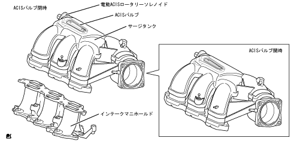

| Electric ACIS (Variable Intake System) |
| ● |
Electric ACIS (Acoustic Control Induction System) has been adopted and integrated into the resin surge tank by laser welding, reducing the number of parts and weight.
|
| ● |
The engine control computer electrically opens and closes the ACIS valve in accordance with the engine speed, throttle valve opening and the cycle of the pulsating flow that changes with engine speed, switching the intake pipe length to increase engine torque.
|
 |
 Construction of ACIS Construction of ACIS
|
 Operation of ACIS Operation of ACIS
|